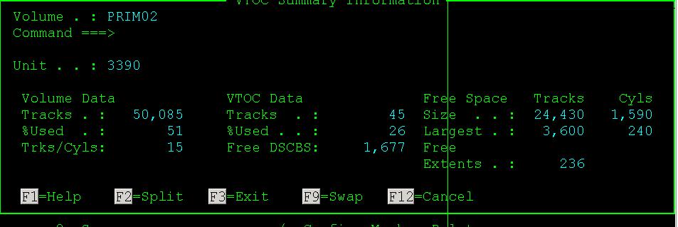

IBM主机技术一本通笔记
2011-08-21
这一系列文章将会是从《IBM主机技术一本通》里面选取我个人认为对我有用的部分来记录和阐述。
1、LRECL和BLKSIZE

LRECL:逻辑记录是程序想要处理的一个数据单元，通常由许多连接在一起的区域构成。
BLKSIZE：物理单元(又称块) 描述了在一次输入输出操作中需要传送的数据量，如上图所示，你一定发现了BLKSIZE必须是LRECL的整数倍，显然这是因为BLKSIZE是多个LRECL嘛！ 任何时候发生输入输出时传送的是整个块而不是单个逻辑记录，这样做的好处显而易见，有效地使用空间，提高传送率。
2、I——PDS(分区数据集)信息分析
一直对这个知识点一知半解的，今天看了一本通之后，算是明白了。照着图说：

呃... 存储介质：标准磁盘；卷名：PRIM03；设备：3390；组织结构：PO(分区数据集)，固定记录长度，记录长度80字节，块大小27920字节，首次分配1 track，用完后每次可扩展分配195个tracks，当前已经分配了2个track，一共分配了1次，最多可以有10个目录块，即最多可以有10x4=40个member，当前已经使用了2个tracks，当前已经分配了1次，已经有6个member，使用了2个目录块(4和2)
3、L member
将这个命令列在这里不是不会用，恰恰是天天用经常用。只是羞于我一直以为这里L是List的缩写，原来人家吕老师说了，这是Locate的缩写，目的是每次都将PDS下面的你要找的member定位在第一个位置。
4、查看VTOC信息
VTOC是系统中的一个顺序数据集，存放在磁盘的0柱面0磁道之后，65535磁道之前。用于记录存储设备上所有数据集的属性，每个磁盘均有一个VTOC。
例如，我要查看磁盘卷PRIM02的信息。
ruby3.4;V
在Volume Serial上填： PRIM02

PRIM02卷总共有50085 tracks，已经用了51%,1个cyls等于15个tracks，VTOC数据集本身分配了45个tracks,已用的占26%，还有1677个可用的DSCBS(数据集控制块)，PRIM02卷上一共还有24430tracks(即1590个Cyls)未使用，未使用的空间中最大的一块有3600tracks(即240个Cyls)。
Category: Mainframe Tagged: z/OS